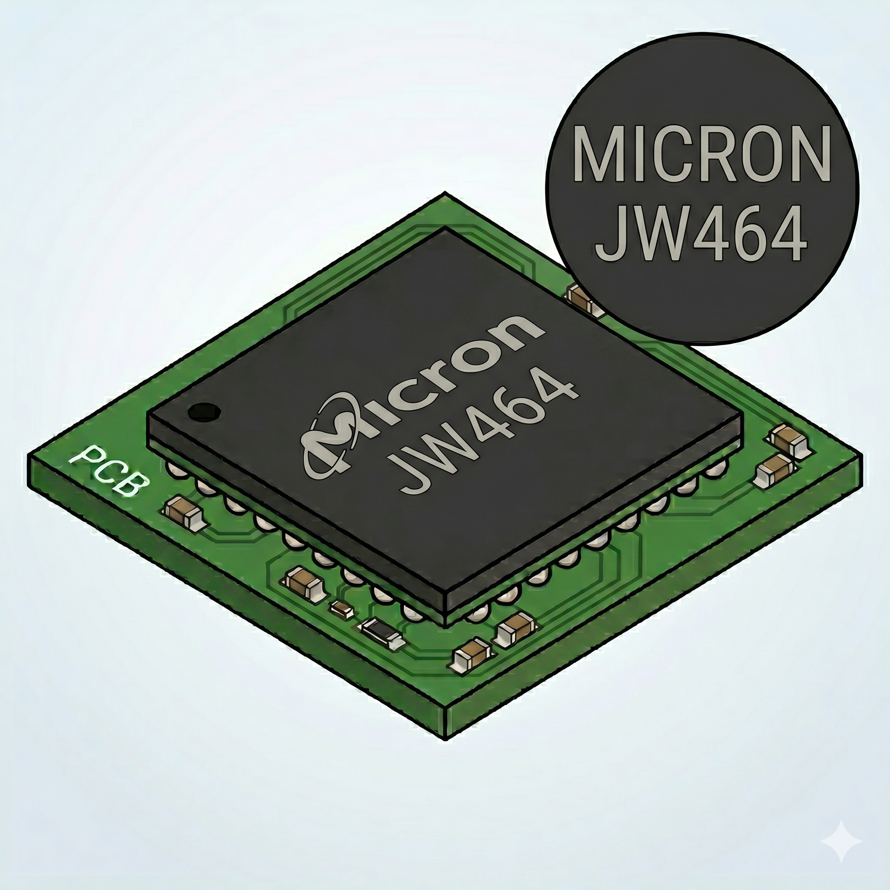

4.3 Micron
EUA · Fundada em 1978

A Micron se destaca no cenário global de semicondutores como a única e principal grande fabricante ocidental (norte-americana) de memórias. Ela é uma fornecedora de peso tanto para o mercado corporativo (servidores e datacenters) quanto para dispositivos de consumo de alta performance. Na esteira de triagem, os componentes dessa marca representam uma fatia considerável e muito rentável do volume processado. Identificar corretamente o material da Micron é vital para a nossa operação, pois muitos desses chips possuem alta demanda no mercado de eletrônicos reacondicionais. Direcioná-los por engano para a via de destruição e refino de metais significa um desperdício direto de valor agregado.
No entanto, a triagem física desta marca exige uma atenção
redobrada do operador devido a uma peculiaridade operacional: a
Micron utiliza um sistema duplo de marcação que varia de acordo
com o espaço disponível na carcaça do componente. Em chips com
área física generosa, como os encontrados em pentes de memória RAM
tradicionais ou módulos grandes de SSDs corporativos, a empresa
imprime a laser o Part Number completo e detalhado. Esses códigos
longos iniciam tradicionalmente com o prefixo
MT (Micron Technology), tornando a leitura visual
direta, previsível e muito rápida para quem está com a peça em
mãos.
O verdadeiro desafio para o classificador surge ao lidar com chips
menores, frequentemente extraídos de placas de smartphones e
dispositivos embarcados (como eMMC e eMCP). Nesses casos, por
absoluta falta de espaço físico no topo do encapsulamento, a
Micron omite o Part Number longo e imprime apenas um
Código FBGA de 5 caracteres alfanuméricos (como,
por exemplo, JW464 ou D9PXV). Ao bater o
olho nessas cinco letras, não é possível deduzir a capacidade ou a
geração da memória instantaneamente. O operador precisa ter o faro
treinado para reconhecer a logomarca da empresa ou o formato
característico desse código curto, separando a peça para que a sua
real identidade seja revelada através de uma consulta no sistema
de decodificação da Micron.
Se o chip for Micron e apresentar apenas um código curto de 5 dígitos começando com
D9, NW,
NX, NY, ou variantes com
J (como JW, JQ,
JZ), este não é o Part Number real. É um
código criptografado do fabricante.Como o operador deve proceder:
Para decodificar e saber a geração e a capacidade, o operador deve acessar a ferramenta oficial de decodificação da Micron pelo navegador ou celular.
URL para consulta obrigatória:
https://www.micron.com/support/tools-and-utilities/fbga
Abaixo estão os prefixos oficiais (Part Numbers reais) da Micron. Quando o operador consultar o código FBGA no site, o sistema retornará um destes prefixos:
| Tecnologia / Tipo | Prefixo real (pós-decodificação) | Observação para triagem |
|---|---|---|
| SDRAM e DDR1 | MT48LC... / MT46V... |
RAM dedicada obsoleta. Destinar ao fluxo de refino. |
| DDR2 | MT47H... |
RAM dedicada antiga. Baixíssima viabilidade. |
| DDR3 e DDR3L | MT41J... / MT41K... |
MT41J (1.5V) e MT41K (1.35V).
Viabilidade legada.
|
| DDR4 e DDR5 | MT40A... / MT60B... |
RAM dedicada atual. MT40A (DDR4) e
MT60B (DDR5). Altamente viáveis.
|
| LPDDR1 e LPDDR2 | MT46H... / MT42L... |
Mobile RAM legada. Encontrada em sucatas de embarcados muito antigos. |
| LPDDR3, 4 e 4X |
MT52L... / MT53E... /
MT53D...
|
Mobile RAM padrão. Frequentemente marcada com códigos
D9.
|
| LPDDR5 e 5X | MT62F... |
Mobile RAM de altíssima velocidade para flagships modernos. |
| GDDR (Vídeo) | MT51... / MT61... |
A Micron fabrica as exclusivas GDDR6X
(MT61M). Altíssima viabilidade em reparo de
placas de vídeo.
|
| eMMC e UFS | MTFC... |
Armazenamento integrado mobile. Geralmente marcado com
códigos NW ou NY no topo.
|
| MCP clássico | MT29C... / MT29K... |
Híbridos mais antigos (NAND SLC + RAM móvel). Bastante
marcados com códigos JW ou JQ.
|
| eMCP e uMCP | MT29T... / MT29V... |
Componentes híbridos mobile modernos (Armazenamento + RAM de alta velocidade). |
| NAND bruta | MT29F... / MT29E... |
Flash solta sem controlador. MT29E foca no
mercado enterprise. Usada aos montes em SSDs e pendrives.
|
| NOR Flash SPI | MT25Q... / MT25T... |
Chips pequenos para gravação de BIOS/Firmware.
Substituíram a antiga série Numonyx/Micron
N25Q.
|
| NOR Flash Parallel | MT28F... / MT28W... |
NOR antiga, geralmente em chips BGA maiores ou TSOP. |
| CPU / SoC | Não produz | A Micron não atua na fabricação de processadores lógicos principais. |
Exemplos práticos de bancada (código impresso → identidade real):
-
O operador lê
JW738na esteira → O site revela que é umMT29C4G48MAAHBAAKS-5 WT(MCP legado de 4Gb NAND + 2Gb LPDDR). -
O operador lê
D9WHVna esteira → O site revela que é umMT40A1G8SA-062E(Chip DDR4 de 8Gb). -
O operador lê
NW813na esteira → O site revela que é umMTFC32GAPALBH-IT(Chip eMMC de 32GB). -
O operador lê
D9SXCna esteira → O site revela que é umMT51J256M32HF-80(Chip GDDR5 de vídeo).